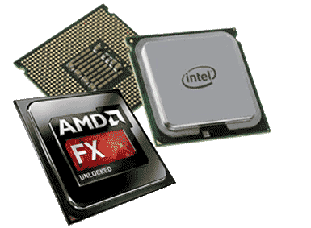
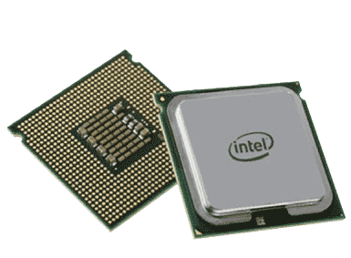
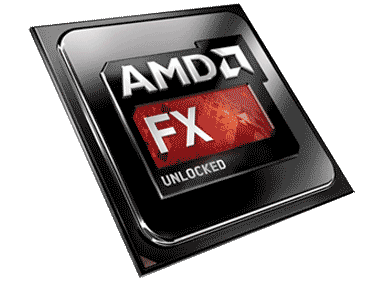

 In the world of CPUs which stands for Central Processing Unit there are really only two choices to make if your going to own a PC instead of an Apple.
Intel and AMD are the major players in the CPU market and anything less is pretty much irrelevant for your everyday user.
There are other CPU manufacturers out there but they are not mainstream enough to consider them when building a new computer.
Apple computers use almost 100 percent proprietary components so it is not feasible to build an Apple computer and frankly I loath them so I wouldn't even if I could.
It isn't that Apple doesn't make a good product because they do.
My problem with Apple as a company and with their products is that as a tech minded individual I like to tinker.
It is in my nature to do so and Apple does there very best to prevent just that by locking or hiding things that you as the owner should have access to with ease.
They do this for several reasons and all of which I understand and have learned how to get around for the most part.
The main reason is that they want your Imac or macbook or Ipad or whatever other product they just put out and are now selling for three times what it is actually worth to function as they designed it to and allowing free and easy access to certain settings and options will result in someone breaking something.
That said by forcing those that want full control over the devices to use hacks, cracks and work arounds to get their devices which they paid good money for to do what they want it to they are are limiting creativity and it is just another way that big companies try to get everyone to walk in a straight line.
In closing this rant I would like to say that if you are a novice and just want something that works, you aren't looking for something to tweak or customize or modify then an Apple Product is mostly likely going to be exactly what you are looking for.
 Intel Is widely known and probably still holds the majority market share for desktop and server processors I would assume.
If cost isn't an issue then you want an Intel processor in your computer.
Intel Processors are generally better at multi tasking, gaming, video and photo editing.
So the question then becomes why wouldn't you use an Intel processor?
The answer to that question has a dollar sign in front of it.
AMD has a lot of CPUs that offer enough power to handle any task but are cheaper by far than any price point Intel has any intentions of reaching any time soon.
Intel has numerous types of CPUs but the most popular types are the I7, the I5, the I3 and the Celeron.
As far as performance goes they rank in the order I just listed them.
A high end workstation or gaming PC will undoubtedly have some variation of an I7 processor in it.
The I7, I5 and I3 all have an integrated GPU or graphic processing unit in addition to the CPU which means that systems using one of these processors don't necessarily need a video card if you aren't planning to do anything too graphics intensive.
"Why is that a good thing?"
Because it can save you money.
If you spend a bit more to buy a CPU with a built in GPU you may be able to save that 70 to 100 dollars that you would have spent on buying a video card that gives comparable results.
 AMD is my go to brand for processors.
I like AMD because price per performance Intel hasn't been able to match them.
If you are looking to buy the best parts money can buy to build a dream machine you buy Intel.
If you are a realist who knows that the money you send on a PC today will be gone a year from now when you are going to upgrade again then you buy an AMD.
To build a very powerful system at a reasonable price you want to go with an AMD CPU most likely or you can go with an Intel and cut corners and downgrade some of your other components to stay on budget.
I have built numerous machines of both AMD and Intel and I can say with honesty that the difference in performance does not warrant the price tag increase.
You can either trust my judgment or find yourself with buyers remorse later when you use a friends AMD machine and it performs pretty much the same as your Intel machine for a fraction of the price that is a choice I will leave up to you.